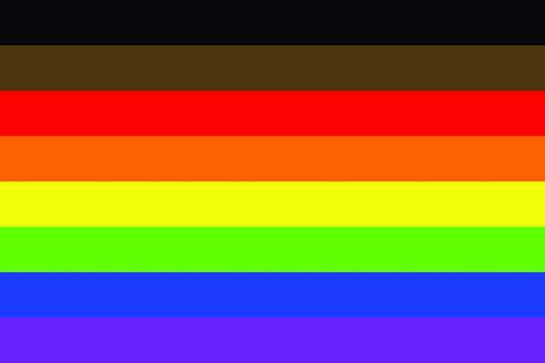

LGTBQ+ Resources
Welcome! This is an all-encompassing website for LGBTQ+ folx and their allies!
My mission is to provide an easily accesible website filled with resources. Let's start with some helpful definitions.
Sexual Orientation
An inherent or immutable enduring emotional, romantic, or sexual attraction to other people.
Gender Identity
One's innermost concept of self as male, female, both, or neither- how individuals see themselves and what they call themselves. One's gender identity can be the same or different from their sex assigned at birth.
Pronouns: (She/Her),(He/Him),(They/Them)

Lesbian
A woman who is emotionally or sexually attracted to other women.
Gay
A sexual orientation that describes a person who is emotionally or sexually attracted to people of their own gender; commonly used to describe men.
Bisexual
A person who is emotionally or sexually attracted to more than one sex or gender.
Pansexual
A person who can be attracted to all different kinds of people, regardless of their biological sex or gender identity.
Transgender
An umbrella term for people whose gender identity and/or expression is different from cultural expectations based on the sex they were assigned at birth. Being transgender does not imply any specific sexual orientation. Therefore, transgender people may identify as straight, gay, lesbian, bisexual, etc
Questioning
The questioning of one's gender, sexual identity, sexual orientation, or all three is a process of exploration by people who may be unsure, still exploring, and concerned about applying a social label to themselves for various reasons.
Asexual
A person who experiences no sexual attraction to other people
Gender Dysphoria
Clinically significant distress caused when a person's assigned birth gender is not the same as the one with which they identify. According to the American Psychiatric Association's Diagnostic and Statistical Manual of Mental Disorders (DSM), the term – which replaces Gender Identity Disorder – "is intended to better characterize the experiences of affected children, adolescents, and adults."
How to be a good Ally
Be a listener.
Be open-minded.
Be willing to talk.
Be inclusive and invite LGBT friends to hang out with your friends and family.
Don't assume that all your friends and co-workers are straight. Someone close to you could be looking for support in their coming-out process. Not making assumptions will give them the space they need.
Anti-LGBT comments and jokes are harmful. Let your friends, family and co-workers know that you find them offensive.
Confront your own prejudices and bias, even if it is uncomfortable to do so.
Defend your LGBT friends against discrimination.
Believe that all people, regardless of gender identity and sexual orientation, should be treated with dignity and respect.
Here are some LGBTQ+ Support lines:
General Youth Support Lines
Youth Talkline
1-800-96-YOUTH
Mon–Sat, 9.30 pm–12 am EST
Tue, 7 pm–12 am EST
Los Angeles Gay and Lesbian Youth Hotline
1.800.773.5540
Mon–Fri, 12 pm–8 pm EST
Gay and Lesbian National Hotline
1-888-843-4564
Mon–Fri, 4 pm–12 am EST
Topic Specific Support lines
Trans Lifeline
1-877-565-8860
HIV/AIDS/STD Line
1-800-342-2437
HIV/AIDS Treatment Info Services
1-800-448-0440
Mon–Fri, 12 pm–5 pm EST
Transgender Rights
Explore transgender rights, from health care access, to fair treatment for youth and students, to non-discrimination protections in every area of life.
Discrimination by state:
Public Accommodations by state
Student rights by state
ID Information by state
LGBTQ+ Organizations
Youth
Bullying by state
GSA/LGBTQ+ Clubs by state
Juvenile Justice by state